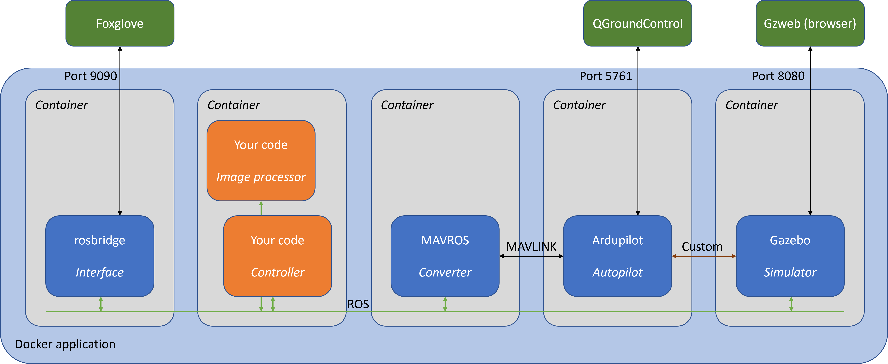

10. The Starling framework¶
10.1 Introduction¶
This tutorial template is built on the Starling framework which combines open-source components to provide a realistic, cross-platform simulation for drone flight. So far from the standard tutorial, you should be aware of the following technologies.
- Gazebo, a physical and visual simulation package
- Ardupilot, a free autopilot software with MAVLINK interfacing and simulation capability
- ROS, a popular software framework for robot interfacing, plus the MAVROS package for connecting MAVLINK drones to ROS.
- OpenCV, an image processing library with Python support
- Docker, a system for packaging and deploying
Surely there's a simpler way? Almost certainly, but you wouldn't learn so much. These are the standard tools of the robotics trade, and while it'll take you a while to learn them, the skills you get will go far beyond this project. This way also means we can do more with Starling, like migrate controllers from simulation to actual flight.

In this tutorial we will providing a bit more detail into what Starling actually is and providing a brief overview of some of the components that comprise Starling, and how they work together to provide you a platform to build your applications upon.
10.2 What is Starling ...v2¶
I'm sure when we mention Starling, it's still a nebulous thing thats quite hard to define right now. When we previously introduced Starling, we simply said that it's a thing we developed which allows you to quickly and easily install and run a UAV simulation within a simulated environment to allow you to develop and test your contorllers for this project.
Now you hopefully have a bit more experience in using the stuff that Starling provides, you might be wondering whether that's actually the whole story - and you'd be right! Let's first recap the parts of Starling you will have touched.
10.2.1 Docker Compose¶
Multiple times in this tutorial you should have run the docker-compose up --build command that starts the simulation. If you have a look inside one of these compose files, you'll see something like the following yaml format file:
services:
controller:
build: ../fenswood_drone_controller
simhost:
image: uobflightlabstarling/starling-sim-iris-ap-fenswood:latest
environment:
- AP_SITL_HOST=sitl
ports:
- "8080:8080"
sitl:
image: uobflightlabstarling/starling-sim-ardupilot-copter:v0.0.8
environment:
- ...
mavros:
image: uobflightlabstarling/starling-mavros:v0.1.0
command: ros2 launch launch/mavros_bridge.launch.xml
environment:
- ...
ports:
- "5761:5761"
rosbridge-suite:
image: uobflightlabstarling/rosbridge-suite:v0.1.0
ports:
- "9090:9090"
Firstly we note that this configuration uses a file format known as yaml, as opposed to json or xml. It uses tabs/indentation to denote groupings of key-value pairs or lists. The configuration specifies a set of services which we have named controller, simhost, sitl, mavros and rosbridge-suite. Each service defines an application container to be run all at the same time, giving us the 'recipe' for what containers to run to generate this application. Docker-compose launches all of these containers together, a bit like starting a set of virtual computers which are all networked together.
Most of the application containers, such as simhost, sitl, mavros and rosbridge-suite are defined by their image field which specifies the particular container to download and run. The other fields such as environment and port are used to speficy environment variables and ports respectively for the image.
The controller is a special container which is built directly by docker-compose. The build field specifies a path to the Dockerfile which containers the instructions for building the application. In this case, the application is your fenswood drone control ros nodes which you have been modifying in the earlier tutorials. Specifying --build on the end of docker-compose requests docker compose to re-build this controller application container.
10.2.2 Starling Application Containers¶
Apart from the controller which contains your own application code, all of the other application containers are provided by Starling.
simhost:uobflightlabstarling/starling-sim-iris-ap-fenswood:latest- Gazebo, the physics simulator. Given commands from the autopilot, it simulates how the drone moves. Gazebo also provides graphics, simulating the drone cemra feed and sending it to ROS, and providing a representation of the world for us to spy on via the browser interface on
localhost:8080. - In particular this application container is from FenswoodScenario which includes the Fenswood map, along with the simulation elements needed to represent this task.
- Gazebo, the physics simulator. Given commands from the autopilot, it simulates how the drone moves. Gazebo also provides graphics, simulating the drone cemra feed and sending it to ROS, and providing a representation of the world for us to spy on via the browser interface on
sitl:uobflightlabstarling/starling-sim-ardupilot-copter:latest- Ardupilot, a free autopilot software with MAVLINK interfacing and simulation capability.
- This application container automatically finds and connects to the simulator, spawns a model and connects the software autopilot running Ardupilot to the now spawned gazebo model.
mavros:uobflightlabstarling/starling-mavros:latest- MAVROS package for connecting MAVLINK drones to ROS.
- This application container automatically starts and connects the SITL as if it was a real drone. It then provides a ROS2 Foxy api for user applications to interact with the simulated drone.
- It also serves to forward MAVLINK to a ground station or a PyMavlink application.
rosbridge-suite:uobflightlabstarling/rosbridge-suite:latest- Rosbridge-suite package for translating ROS2 packets into JSON for communication with web base ROS2 (roslibjs)
- This application container forwards ROS2 comms over to web based applications such as Foxglove Studio or your own web based applications such as the Starling example ui.
Each of these application containers are built using Docker and uploaded onto Docker Hub publically so they are available to all to download and use.
Starling uses Docker to package up the simulation framework and other applications for use on different computers. I found the Duckietown introduction really good for getting a feel for Docker. We'll go into more detail in what Docker actually is in the next tutorial.
You may have also noticed, readin through the above, we mention "automatically" a lot in the function of some of these containers. Usefully for you, many of the above containers have extra configuration and startup steps above and beyond the individual base applications to ensure that the usage and interconnectivity of all the different parts of the simulations are smooth and hassle free!
Note It's useful to keep the idea that each container has a custom startup sequence. For more complex tasks and modifications, you may be able to leverage this paradigm. It is also an avenue to consider when bug hunting integration testing your application.
10.3 What actually is Starling¶
Even for the extended purpose of this advanced tutorial, the above should be sufficient background knowledge.
However for completeness, here we finally describe what exactly Starling is.
Starling is an end to end, modular, containerised UAV infrastucture designed to facilitate the local development, testing and deployment of Single and Multi-UAV systems from simulation to the Bristol Robotics Lab Flight Arena and Fenswwod farm. It will hopefully allow for a more approachable development workflow to enable more researchers to fly UAVs in a safe, reproducable and controllable manner.

This diagram describes the full intended architecture of the usage of Starling in a multi-vehicle use case. It includes another deployment layer above which you will not need to know about for the purpose of this project. For those who really want to read further, check out this further tutorial
Just keep in mind that Starling has been developed for many uses, of which this project is but one. While complex, the design allows for flexibility for use in many places!
10.4 Exercises¶
-
Have a browser of the Starling projects available on github (StarlingUAS), as well as the containers available on the
uobflightlabstarlingorganisation on Docker Hub. (You may need to create an account - this may come in handy during this project). -
Change the port number for simhost in one of your docker-compose files and run it. Try and navigate to it in the browser.
-
There exists an example web user interface as the image
uobflightlabstarling/starling-ui-example:latest. Add a new entry in your docker-compose file so that you can also run this example ui as part of your simulation. Note that you will need to enable ports 9090 and 3000 before you can access the UI from your browser.